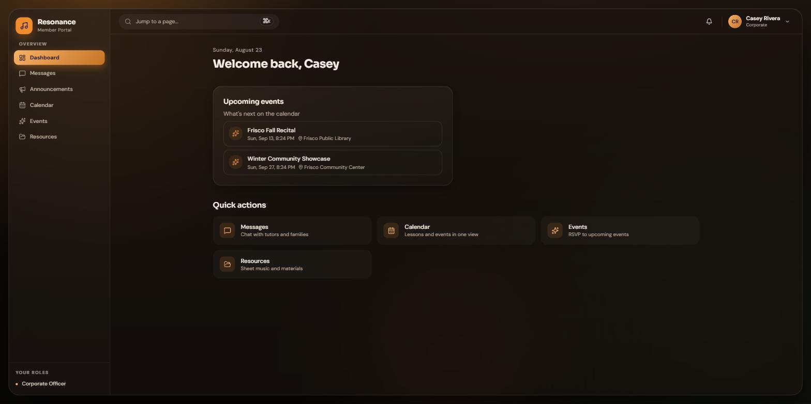
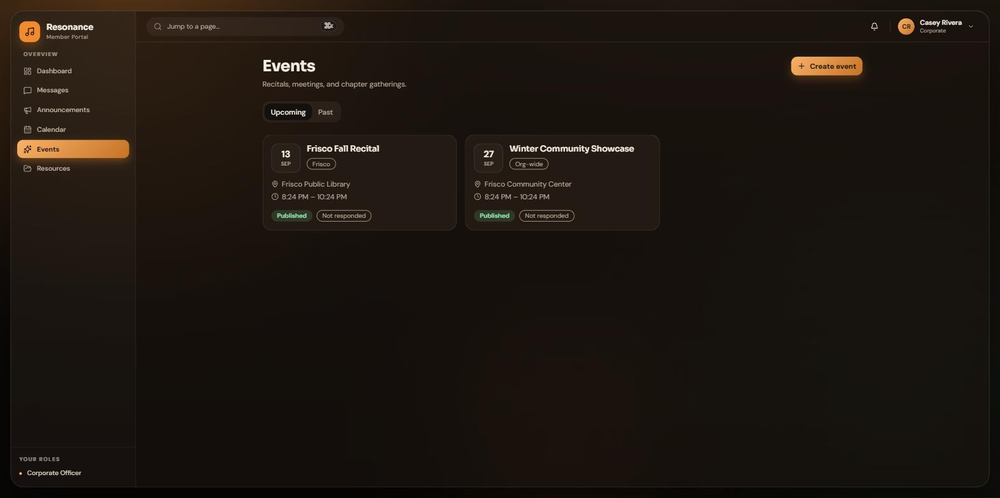
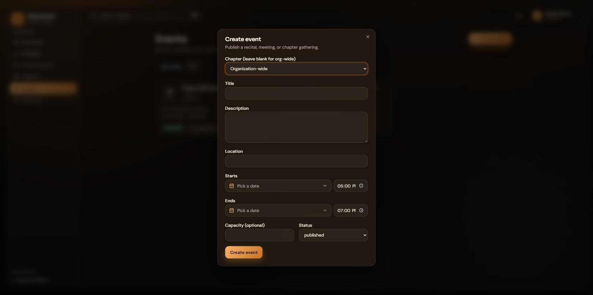
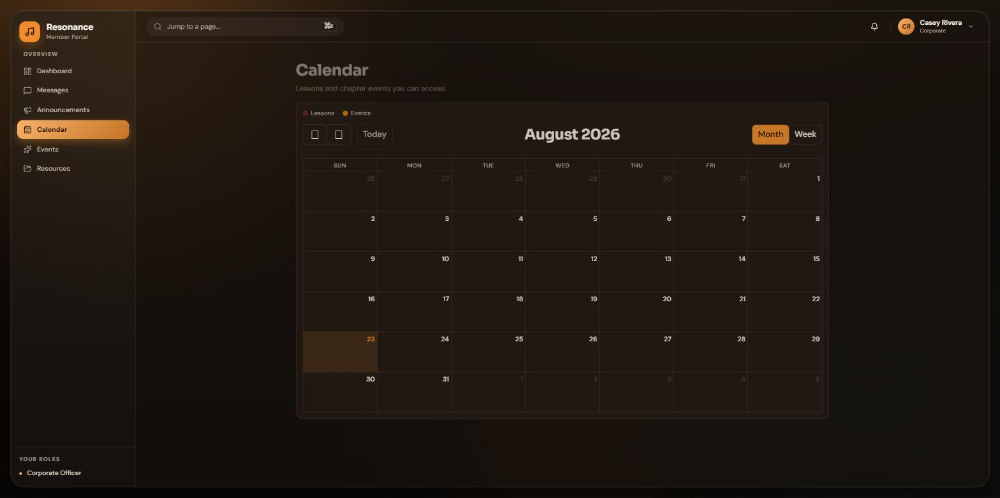

NO. RF-2026-CO
Portal Guide
The Corporate Officer Guide
How to run organization wide events and stay connected in the Resonance Foundation member portal.
Corporate Officers · theresonancefoundation.org
How to run organization wide events and stay connected in the Resonance Foundation member portal.
Corporate officers work at the organization level. Your job in the portal is organization wide events: creating them, keeping their details current, and watching who is coming.
Sign in at theresonancefoundation.org and you land on your dashboard. Your sidebar keeps things simple: Dashboard, Messages, Announcements, Calendar, Events, and Resources. The dashboard greets you with upcoming events and quick actions into the pages you use most.

You operate at the corporate level only. Chapter internals (students, families, applicants, tutors) and donation records are outside your view by design. If you need something from a chapter, message its leadership.
The Events page is your workspace. It lists every upcoming event with its chapter tag, location, time, status, and your own RSVP state.


Three quiet pages keep you in the loop between events.

| You can | You cannot |
|---|---|
| Create, edit, and manage organization wide events | See chapter students, families, applicants, or tutors |
| Track RSVPs and attendance for your events | View or record donations (board only) |
| View announcements, calendar, and resources | Publish announcements or upload resources |
| Message staff and chapter leadership | Assign or remove anyone's role |
| RSVP to any event | Approve volunteer hours |
Corporate officers are appointed and removed by the Board of Directors alone. If your team is changing, that conversation goes to the board.
Questions or something broken? Email administrator@theresonancefoundation.org and a real person will get back to you.